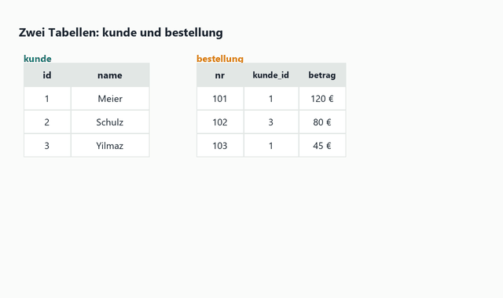
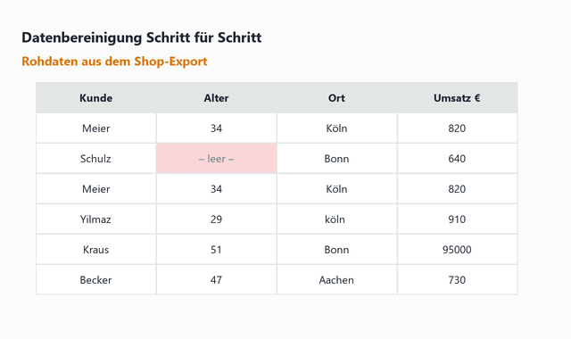
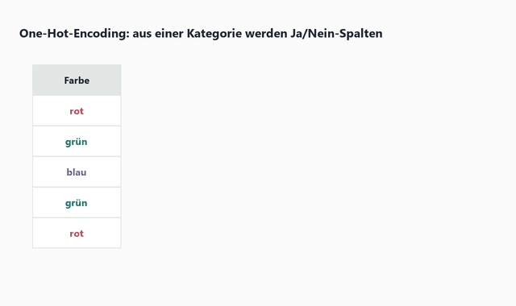
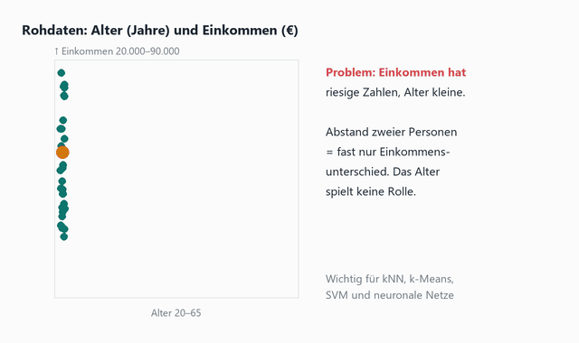
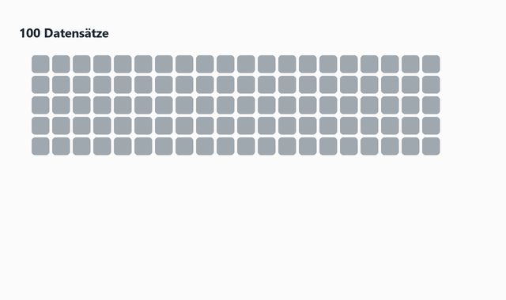
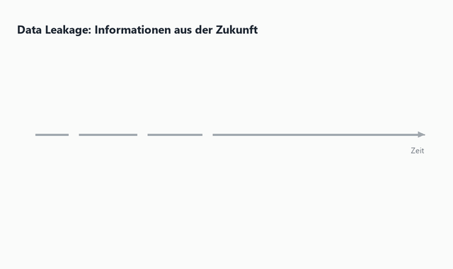

Ein Modell ist nur so gut wie seine Daten. In der Praxis stecken 60 bis 80 Prozent der Arbeit eines KI-Projekts in der Datenaufbereitung. In diesem Modul lernen Sie, Daten aus Datenbanken zu holen (SQL), ihre Qualität zu prüfen, Fehler zu beheben, Merkmale so umzuwandeln, dass ein Modell sie versteht, und die Daten sauber aufzuteilen, ohne in die gefährlichste Falle zu tappen: Data Leakage.
Datenquellen, Datenbanken, SQL und die Regeln, unter denen man Daten überhaupt erheben darf.
Ein Koch braucht gute Zutaten. Aus verdorbenem Gemüse wird auch mit dem besten Rezept kein gutes Essen. Für eine KI sind Daten die Zutaten und der Algorithmus das Rezept. Fachleute sagen deshalb: „Garbage in, garbage out“ – Müll rein, Müll raus.
| Datenart | Merkmal | Beispiele | Typisches Format |
|---|---|---|---|
| Strukturiert | Feste Spalten und Zeilen, jeder Wert hat seinen Platz | Kundentabelle, Buchungen, Sensormesswerte | Datenbank, CSV, Excel |
| Semistrukturiert | Hat Bezeichner, aber keine starre Tabelle | Bestellung mit beliebig vielen Artikeln, Logdateien | JSON, XML |
| Unstrukturiert | Kein festes Schema | E-Mails, Fotos, Sprachaufnahmen, PDFs | Text-, Bild-, Audiodateien |
Volume (Menge), Velocity (Geschwindigkeit, z. B. Sensordaten im Millisekundentakt), Variety (Vielfalt der Formate), Veracity (Verlässlichkeit, Qualität), Value (Nutzen). Für die Prüfung reicht: Man kann die Begriffe nennen und an einem Beispiel erklären.
| Datenbestand | Art | Typisches Format | Für ML nutzbar als |
|---|---|---|---|
| Bestelltabelle (Nummer, Datum, Betrag) | strukturiert | Datenbank | Merkmale für Absatzprognose |
| Warenkorb mit beliebig vielen Artikeln | semistrukturiert | JSON | Aufgerollt zu Anzahl Artikel, Warenwert |
| Kundenmails und Bewertungen | unstrukturiert | Text | Stimmungsanalyse, Themenzuordnung |
| Produktfotos | unstrukturiert | Bilddateien | Automatische Kategorisierung |
| Klicks im Shop (Zeitstempel, Seite) | semistrukturiert (Log) | Logdatei, JSON | Empfehlungen, Abbruchprognose |
Man sieht: Ein einziger Webshop erzeugt alle drei Datenarten. Für ein Modell müssen sie meist erst in eine Tabelle mit Zahlen gebracht werden.
Eine Anlage hat 200 Sensoren, die jeweils 10 Messwerte pro Sekunde liefern.
Das ist Volume (Menge) und Velocity (Geschwindigkeit) zugleich. Solche Datenmengen verlangen von Anfang an eine Überlegung: Speichern wir jede Messung oder nur Zusammenfassungen (z. B. Mittelwert je Minute)?
Scheitert das Projekt später, liegt es erfahrungsgemäß öfter an einer dieser Fragen als an der Auswahl des Algorithmus.
Frage (6 Punkte): Nennen Sie je ein Beispiel und ein typisches Format für strukturierte, semistrukturierte und unstrukturierte Daten.
Musterlösung: Strukturiert: Kundentabelle in einer Datenbank oder CSV-Datei (2 Punkte). Semistrukturiert: Bestellung mit beliebig vielen Artikeln als JSON oder XML (2 Punkte). Unstrukturiert: E-Mails oder Fotos als Text- bzw. Bilddateien (2 Punkte).
Rechnung: Das Byte 1011 0110 ist hexadezimal B6 (1011 = B = 11, 0110 = 6) und dezimal 11 · 16 + 6 = 182. Der Buchstabe „A“ hat in ASCII den Wert 65, binär 0100 0001, hexadezimal 41. Umlaute wie „ä“ belegen in UTF-8 zwei Byte – ein Grund, warum falsch eingestellte Kodierungen beim Import „ä“ statt „ä“ liefern.
Annotation ist die nachträgliche Ergänzung von Merkmalen in Daten, häufig genau des Merkmals, das gelernt werden soll (z. B. „Hund“ oder „Katze“ als Label zu einem Foto). Von Menschen annotierte Daten sind besonders wertvoll. Tensoren sind mehrdimensionale Datenstrukturen: Ein Vektor hat eine Dimension, eine Matrix zwei, ein Farbbild drei (Höhe, Breite, Farbkanäle). In Python sind Tensoren geschachtelte Arrays.
Rechnung: Ein RGB-Bild mit 224 × 224 Pixeln hat die Form (224, 224, 3), also 224 · 224 · 3 = 150.528 Zahlen. Ein Batch aus 32 Bildern hat die Form (32, 224, 224, 3) mit 32 · 150.528 = 4.816.896 Zahlen. (Quelle der Begriffe: Lehrmaterialien KI B3, Universität Stuttgart, CC BY 4.0.)
Strukturiert = Tabelle, semistrukturiert = JSON/XML, unstrukturiert = Text, Bild, Ton. Die Qualität der Daten begrenzt die Qualität jedes Modells.
Eine Bibliothek führt eine Kartei der Bücher und eine Kartei der Leser. Auf dem Ausleihzettel steht nicht die ganze Adresse des Lesers, sondern nur seine Lesernummer. Wer die Adresse braucht, schlägt in der Leserkartei nach. Genau so arbeiten relationale Datenbanken: Jede Information steht nur an einer Stelle, verbunden über Nummern.
| Begriff | Bedeutung | Beispiel |
|---|---|---|
| Tabelle (Relation) | Sammlung gleichartiger Datensätze | kunde, bestellung |
| Datensatz (Zeile, Tupel) | Ein Eintrag | Kundin Meier |
| Attribut (Spalte) | Eine Eigenschaft | name, ort |
| Primärschlüssel | Eindeutige Kennung jeder Zeile | kunde.id |
| Fremdschlüssel | Verweis auf den Primärschlüssel einer anderen Tabelle | bestellung.kunde_id |
| Beziehung 1:n | Ein Kunde – viele Bestellungen | kunde ↔ bestellung |
| Beziehung n:m | Viele zu viele, über eine Zwischentabelle | bestellung ↔ artikel über position |
Schlechtes Beispiel – eine einzige Tabelle:
| Best.-Nr. | Kunde | Kundenort | Artikel |
|---|---|---|---|
| 101 | Meier | Köln | Bohrer, Dübel |
| 102 | Meier | Koeln | Säge |
artikel.kunde. Der Widerspruch „Köln“/„Koeln“ kann dann gar nicht mehr entstehen.Für ein Modell braucht man meist eine flache Tabelle (eine Zeile pro Beispiel). Man holt die Daten also aus vielen normalisierten Tabellen und verbindet sie mit JOINs (Lektion 4). Außerdem gibt es NoSQL-Datenbanken (Dokument-, Schlüssel-Wert-, Graph-Datenbanken) und für KI-Suchen Vektordatenbanken (Modul 8).
Frau Meier hat 500 Bestellungen aufgegeben und zieht von Köln nach Bonn. In der einen großen Tabelle steht der Ort in jeder der 500 Zeilen: 500 Änderungen, und wenn eine vergessen wird, hat dieselbe Kundin zwei Orte. In der normalisierten Lösung steht der Ort einmal in der Tabelle kunde: eine Änderung genügt. Das nennt man das Vermeiden von Redundanz und Änderungsanomalien.
| Tabelle | Spalten | Primärschlüssel | Fremdschlüssel |
|---|---|---|---|
kunde | id, name, ort | id | – |
bestellung | nr, kunde_id, datum | nr | kunde_id → kunde.id |
artikel | id, name, preis | id | – |
position | bestellung_nr, artikel_id, menge | (bestellung_nr, artikel_id) | bestellung_nr → bestellung.nr; artikel_id → artikel.id |
Beziehungen: Ein Kunde hat viele Bestellungen (1:n). Eine Bestellung enthält viele Artikel, ein Artikel steckt in vielen Bestellungen (n:m) – deshalb die Zwischentabelle position.
Als Primärschlüssel der Tabelle kunde könnte man die E-Mail-Adresse nehmen. Das ist riskant: Sie kann sich ändern, und dann müssten alle Verweise angepasst werden. Üblich ist eine künstliche, unveränderliche ID (laufende Nummer oder zufällige Kennung). Gute Primärschlüssel sind eindeutig, nie leer und ändern sich nie.
Frage (5 Punkte): Erklären Sie die Begriffe Primärschlüssel und Fremdschlüssel am Beispiel der Tabellen kunde und bestellung.
Musterlösung: Der Primärschlüssel identifiziert jede Zeile einer Tabelle eindeutig, z. B. kunde.id (2 Punkte). Der Fremdschlüssel in bestellung, nämlich kunde_id, verweist auf den Primärschlüssel kunde.id und stellt die Beziehung her: Ein Kunde kann viele Bestellungen haben (1:n) (3 Punkte).
Primärschlüssel identifiziert eine Zeile, Fremdschlüssel verweist auf eine andere Tabelle. Normalisierung speichert jede Information nur einmal.
SQL ist wie eine sehr höfliche, sehr genaue Bestellung im Lager: „Bring mir (SELECT) Name und Umsatz aus (FROM) der Kundenkartei, aber nur (WHERE) Kunden aus Köln, sortiert (ORDER BY) nach Umsatz.“ Der Lagerist (die Datenbank) sucht alles heraus.
-- Grundform einer Abfrage SELECT name, ort, umsatz -- welche Spalten? FROM kunde -- aus welcher Tabelle? WHERE ort = 'Köln' AND umsatz > 1000 -- welche Zeilen? ORDER BY umsatz DESC; -- Reihenfolge (DESC = absteigend)
| Baustein | Aufgabe | Beispiel |
|---|---|---|
SELECT * | alle Spalten | SELECT * FROM kunde |
WHERE | Zeilen filtern; AND, OR, NOT, IN, BETWEEN, LIKE | WHERE ort IN ('Köln','Bonn') |
IS NULL | fehlende Werte finden (nie = NULL!) | WHERE alter IS NULL |
COUNT, SUM, AVG, MIN, MAX | Aggregatfunktionen | SELECT AVG(umsatz) FROM kunde |
GROUP BY | Gruppen bilden | Umsatz je Ort |
HAVING | Gruppen filtern (nach dem Gruppieren) | nur Orte mit mehr als 10 Kunden |
DISTINCT | Duplikate im Ergebnis entfernen | SELECT DISTINCT ort FROM kunde |
LIMIT | nur die ersten n Zeilen | LIMIT 10 |
SELECT ort, COUNT(*) AS anzahl, AVG(umsatz) AS mittlerer_umsatz FROM kunde WHERE aktiv = 1 GROUP BY ort HAVING COUNT(*) >= 10 ORDER BY mittlerer_umsatz DESC;
Liest sich: Für jeden Ort mit mindestens 10 aktiven Kunden die Anzahl und den mittleren Umsatz, die umsatzstärksten Orte zuerst.
WHERE filtert einzelne Zeilen vor dem Gruppieren, HAVING filtert Gruppen danach. Eine Bedingung mit COUNT oder SUM gehört deshalb immer in HAVING. Die Reihenfolge der Bausteine ist fest: SELECT – FROM – WHERE – GROUP BY – HAVING – ORDER BY.
INSERT INTO (einfügen), UPDATE … SET … WHERE (ändern), DELETE FROM … WHERE (löschen). Ein UPDATE oder DELETE ohne WHERE betrifft alle Zeilen – ein klassischer, folgenreicher Fehler. Für Datenanalyse braucht man fast nur SELECT.
Am besten lernt man SQL, indem man das Ergebnis selbst vorhersagt. Wir nutzen eine Tabelle mit sechs Kunden:
| id | name | ort | umsatz |
|---|---|---|---|
| 1 | Meier | Köln | 1.200 |
| 2 | Yilmaz | Bonn | 800 |
| 3 | Schulz | Köln | 450 |
| 4 | Weber | Aachen | 2.100 |
| 5 | Kaya | Köln | 1.500 |
| 6 | Berg | Bonn | 300 |
SELECT name, umsatz FROM kunde WHERE ort = 'Köln' AND umsatz > 1000 ORDER BY umsatz DESC;
Schritt für Schritt: Zuerst werden die Zeilen mit Ort Köln gesucht (Meier, Schulz, Kaya), dann davon die mit Umsatz über 1.000 (Meier 1.200 und Kaya 1.500). Schließlich wird absteigend sortiert. Ergebnis: Kaya 1.500, Meier 1.200.
SELECT ort, COUNT(*) AS anzahl, AVG(umsatz) AS mittel FROM kunde GROUP BY ort HAVING COUNT(*) >= 2 ORDER BY mittel DESC;
| ort | anzahl | mittel | bleibt nach HAVING? |
|---|---|---|---|
| Köln | 3 | (1.200 + 450 + 1.500) : 3 = 1.050 | ja |
| Bonn | 2 | (800 + 300) : 2 = 550 | ja |
| Aachen | 1 | 2.100 | nein (nur 1 Kunde) |
Ergebnis: Köln (1.050) vor Bonn (550). Aachen wird von HAVING herausgefiltert, obwohl Weber den höchsten Einzelumsatz hat.
SELECT COUNT(*) FROM kunde; (6)SELECT SUM(umsatz) FROM kunde; (6.350)SELECT DISTINCT ort FROM kunde; (Köln, Bonn, Aachen)SELECT name, umsatz FROM kunde ORDER BY umsatz DESC LIMIT 3; (Weber, Kaya, Meier)Frage (5 Punkte): Schreiben Sie eine Abfrage, die für jeden Ort die Anzahl der Kunden und den Gesamtumsatz liefert, aber nur für Orte mit einem Gesamtumsatz über 2.000.
Musterlösung: SELECT ort, COUNT(*) AS anzahl, SUM(umsatz) AS gesamt FROM kunde GROUP BY ort HAVING SUM(umsatz) > 2000; (je 1 Punkt für SELECT mit Aggregaten, GROUP BY ort, HAVING statt WHERE, richtige Bedingung, richtige Syntax). Ergebnis bei der obigen Tabelle: Köln (3 / 3.150) und Aachen (1 / 2.100).
SELECT wählt Spalten, WHERE wählt Zeilen, GROUP BY bildet Gruppen, HAVING filtert Gruppen, ORDER BY sortiert.
Sie haben eine Gästeliste und eine Liste, wer welches Geschenk mitgebracht hat. Beide Listen haben die Gastnummer. Ein JOIN legt sie nebeneinander, sodass neben jedem Geschenk der Name des Gastes steht. Die Frage ist nur: Sollen Gäste ohne Geschenk auch auf der Liste stehen?

| JOIN-Art | Liefert | Typische Frage |
|---|---|---|
| INNER JOIN | Nur Zeilen mit Partner in beiden Tabellen | Welche Bestellungen haben welche Kunden? |
| LEFT JOIN | Alle Zeilen der linken Tabelle, fehlende Partner als NULL | Alle Kunden, auch die ohne Bestellung |
| RIGHT JOIN | Wie LEFT, nur von rechts aus | selten genutzt |
| FULL OUTER JOIN | Alle Zeilen beider Tabellen | Abgleich zweier Listen |
-- Kunden ohne Bestellung finden (Kündigungsgefahr!) SELECT k.id, k.name FROM kunde k LEFT JOIN bestellung b ON b.kunde_id = k.id WHERE b.nr IS NULL; -- Umsatz je Kunde für die Modell-Tabelle (eine Zeile pro Kunde) SELECT k.id, k.alter, COUNT(b.nr) AS anzahl_bestellungen, COALESCE(SUM(b.betrag), 0) AS umsatz FROM kunde k LEFT JOIN bestellung b ON b.kunde_id = k.id GROUP BY k.id, k.alter;
COALESCE(x, 0) ersetzt NULL durch 0 – Kunden ohne Bestellung bekommen Umsatz 0 statt „leer“.
Ein JOIN kann Zeilen vervielfachen: Hat ein Kunde drei Bestellungen, erscheint er dreimal. Wer danach einfach zählt, zählt Kunden mehrfach. Deshalb vor dem Training immer prüfen: Eine Zeile pro Beispiel?
Zwei kleine Tabellen: Kunden (1 Meier, 2 Yilmaz, 3 Schulz) und Bestellungen (Nr. 10: Kunde 1, 120 €; Nr. 11: Kunde 1, 80 €; Nr. 12: Kunde 2, 200 €). Schulz hat noch nichts bestellt.
| JOIN | Zeilen im Ergebnis | Wer fehlt oder steht mit NULL? |
|---|---|---|
INNER JOIN | 3: Meier 120, Meier 80, Yilmaz 200 | Schulz fehlt ganz |
LEFT JOIN (Kunde links) | 4: wie oben plus Schulz mit Betrag NULL | Schulz erscheint, der Betrag ist leer |
Der Unterschied ist wichtig für ML: Mit dem INNER JOIN verliert man alle Kunden ohne Bestellung – oft genau die gefährdeten Kunden.
SELECT k.name, COUNT(b.nr) AS anzahl, COALESCE(SUM(b.betrag), 0) AS umsatz FROM kunde k LEFT JOIN bestellung b ON b.kunde_id = k.id GROUP BY k.id, k.name;
| name | anzahl | umsatz |
|---|---|---|
| Meier | 2 | 200 |
| Yilmaz | 1 | 200 |
| Schulz | 0 | 0 |
Jetzt gibt es genau eine Zeile pro Kunde, und Schulz hat den Umsatz 0 statt „leer“ (dank COALESCE). So sieht eine Trainingstabelle aus.
Vergisst man das ON b.kunde_id = k.id, verbindet die Datenbank jede Zeile mit jeder: 3 Kunden × 3 Bestellungen = 9 Zeilen, in denen Meier plötzlich Bestellungen von Yilmaz hat. Man nennt das ein kartesisches Produkt. Bei großen Tabellen (1 Million × 1 Million Zeilen) bringt das die Datenbank zum Stillstand. Merke: Jeder JOIN braucht eine Bedingung.
Frage (5 Punkte): Sie wollen alle Kunden sehen, auch die ohne Bestellung, jeweils mit der Anzahl ihrer Bestellungen. Welche JOIN-Art nutzen Sie, und warum ist INNER JOIN hier falsch?
Musterlösung: LEFT JOIN von kunde auf bestellung (2 Punkte), danach GROUP BY und COUNT (1 Punkt). Ein INNER JOIN liefert nur Kunden mit mindestens einer Bestellung; Kunden ohne Bestellung würden aus dem Ergebnis verschwinden (2 Punkte).
INNER JOIN = nur gemeinsame Treffer. LEFT JOIN = alle links, rechts fehlt es als NULL. Für Modelle meist: LEFT JOIN plus GROUP BY auf eine Zeile pro Beispiel.
Wer eine Umfrage nur vor einem Fitnessstudio macht, wird feststellen, dass „alle Menschen“ viel Sport treiben. Wie Daten erhoben werden, entscheidet darüber, ob sie die Wirklichkeit abbilden. Und: Nur weil man an Daten herankommt, darf man sie noch nicht für alles verwenden.
| Erhebungsart | Beschreibung | Risiko |
|---|---|---|
| Automatisch erfasst | Sensoren, Logdateien, Kassensystem | Messfehler, Ausfälle, Zeitzonen |
| Manuell erfasst | Formulare, Eingaben von Mitarbeitenden | Tippfehler, uneinheitliche Schreibweisen |
| Befragung | Umfragen, Interviews | Auswahlverzerrung, sozial erwünschte Antworten |
| Experiment | A/B-Test, kontrollierte Versuche | aufwendig, aber zeigt Ursachen |
| Labeling | Menschen vergeben Zielwerte | uneinheitliche Bewertung → Regeln und Doppelbewertung |
Wenn die Trainingsdaten nicht die Fälle abbilden, auf die das Modell später trifft, versagt es. Ein Bilderkennungsmodell, das nur mit Fotos bei Tageslicht trainiert wurde, erkennt nachts schlecht. Daten müssen repräsentativ sein.
Vertraulichkeit (nur Befugte sehen die Daten – Rechtekonzept, Verschlüsselung), Integrität (Daten sind unverfälscht – Protokollierung, Prüfsummen, Schutz vor SQL-Injection durch parametrisierte Abfragen), Verfügbarkeit (Daten sind da, wenn man sie braucht – Backups, Redundanz).
Ein Händler bittet 1.000 Kunden per E-Mail um eine Bewertung. 120 antworten, 108 davon sind zufrieden: Das sind 108 : 120 = 90 %. Aber die 880 Nicht-Antwortenden fehlen. Unzufriedene Kunden antworten oft gar nicht oder haben den Händler schon verlassen. Die 90 % bilden nicht die Wirklichkeit ab (Auswahlverzerrung). Ein Modell, das auf diesen Daten lernt, wäre zu optimistisch. Gegenmittel: Nicht-Antwortende gezielt nachfragen oder die Verzerrung bei der Deutung offenlegen.
| Original | Pseudonymisiert | Anonymisiert (aggregiert) |
|---|---|---|
| Hannah Meier, 34, Köln, 1.250 € | K-4711, 34, 50667, 1.250 € Zuordnungstabelle K-4711 → Hannah Meier liegt getrennt und geschützt | Altersgruppe 30–39, Region West, Mittelwert 1.180 € (Gruppe von 250) |
Bei der Pseudonymisierung kann der Personenbezug mit der Zuordnungstabelle wiederhergestellt werden: Es sind weiterhin personenbezogene Daten, und die DSGVO gilt. Bei echter Anonymisierung ist niemand mehr identifizierbar, die DSGVO gilt nicht mehr. Aber: Anonymisieren ist schwer, denn Kombinationen aus Alter, Ort und Beruf können einzelne Personen verraten.
Für eine Kündigungsprognose reichen Vertragsdaten und Nutzungsverhalten. Name, Straße und Telefonnummer braucht das Modell nicht: Man lässt sie weg oder ersetzt sie durch eine Kennung. Das reduziert das Risiko, falls Daten abfließen, und erfüllt den Grundsatz der Datenminimierung. Fragen Sie bei jedem Merkmal: Brauche ich es wirklich für das Ziel?
Frage (6 Punkte): Erklären Sie den Unterschied zwischen Pseudonymisierung und Anonymisierung und sagen Sie, ob die DSGVO jeweils gilt.
Musterlösung: Bei der Pseudonymisierung wird ein Merkmal (z. B. Name) durch eine Kennung ersetzt; die Zuordnung ist getrennt gespeichert und der Personenbezug kann wiederhergestellt werden – die DSGVO gilt weiter (3 Punkte). Bei der Anonymisierung kann niemand mehr identifiziert werden – die DSGVO gilt nicht mehr (3 Punkte).
Datensicherheit stellt sicher, dass Unbefugte keinen Zugriff auf Daten haben, dass Daten nicht ungewollt verändert werden und nicht verloren gehen. Bei personenbezogenen Daten sind Unternehmen verpflichtet, dafür technische und organisatorische Maßnahmen (TOM) zu treffen. Die Schutzziele heißen Vertraulichkeit, Integrität und Verfügbarkeit.
| Kontrolle (klassische Einteilung) | Frage | Beispiel |
|---|---|---|
| Zutrittskontrolle | Wer kommt in Räume und Gebäude? | Schließanlage, Besucherliste |
| Zugangskontrolle | Wer kommt in Systeme? | Benutzerkonto, Passwort, Zwei-Faktor |
| Zugriffskontrolle | Wer sieht und ändert welche Daten? | Rollen- und Rechtekonzept |
| Weitergabekontrolle | Wie sind Daten beim Transport geschützt? | Verschlüsselung bei Übertragung |
| Eingabekontrolle | Wer hat wann was geändert? | Protokollierung (Logs) |
| Auftragskontrolle | Wie gehen Dienstleister mit den Daten um? | Auftragsverarbeitungsvertrag |
| Verfügbarkeitskontrolle | Wie schützt man vor Verlust? | Backups, Wiederherstellungstest |
Winziges RSA-Beispiel: p = 3, q = 11, Modul n = 33, φ = 20, öffentlicher Exponent e = 3, privater Exponent d = 7 (denn 3 · 7 = 21 ≡ 1 mod 20). Klartext m = 4: c = 4³ mod 33 = 64 mod 33 = 31. Entschlüsseln: 31⁷ mod 33 = 4. In der Praxis verschlüsselt man mit RSA nur einen AES-Schlüssel (Hybridverfahren) und die Daten selbst mit AES, weil AES viel schneller ist.
Daten müssen repräsentativ und rechtmäßig erhoben sein. Pseudonymisiert ist noch personenbezogen, anonymisiert nicht mehr.
Bevor ein Modell lernt, wird geputzt: fehlende Werte, Dubletten, Ausreißer, Tippfehler.
Ein Adressbuch ist schlecht, wenn Nummern fehlen, falsche Nummern drinstehen, Personen doppelt vorkommen, Leute längst umgezogen sind oder nur die Hälfte der Freunde eingetragen ist. Jeder dieser Mängel ist eine eigene Qualitätsdimension.
| Dimension | Frage | Beispiel für einen Mangel | Prüfung |
|---|---|---|---|
| Vollständigkeit | Fehlen Werte? | Alter bei 20 % der Kunden leer | Anteil fehlender Werte je Spalte |
| Korrektheit / Gültigkeit | Stimmen die Werte? | Postleitzahl „1234“, Alter 212 | Wertebereiche, Formatregeln |
| Konsistenz | Widersprechen sich Angaben? | „Köln“ und „Koeln“; Lieferdatum vor Bestelldatum | Regeln über mehrere Felder |
| Aktualität | Sind die Daten aktuell? | Adresse von 2015 | Zeitstempel prüfen |
| Eindeutigkeit | Gibt es Dubletten? | Kunde zweimal angelegt | Duplikatsuche |
| Repräsentativität | Bilden die Daten die Wirklichkeit ab? | Nur Großkunden in den Trainingsdaten | Verteilungen vergleichen |
Falsche Daten führen zu falschen Modellen und damit zu falschen Entscheidungen: Kredite an die Falschen, Wartung zur falschen Zeit, Werbung an Verstorbene. Datenqualität ist deshalb Chefsache. Viele Unternehmen benennen Data Owner (fachlich verantwortlich) und Data Stewards (pflegen die Qualität).
Eine Tabelle enthält 1.000 Kunden.
Mit solchen Zahlen lässt sich Qualität über die Zeit verfolgen und gegen Ziele (z. B. mindestens 95 % Vollständigkeit) prüfen.
| Mangel | Dimension |
|---|---|
| Bei 20 % der Aufträge fehlt das Lieferdatum | Vollständigkeit |
| Alter eines Kunden: 212 Jahre | Korrektheit (Gültigkeit) |
| Lieferdatum liegt vor dem Bestelldatum | Konsistenz |
| Adressen stammen aus dem Jahr 2015 | Aktualität |
| Ein Kunde steht zweimal in der Datei | Eindeutigkeit |
| Nur Großkunden in den Trainingsdaten, das Modell soll aber alle bewerten | Repräsentativität |
Ein Versandhändler bewirbt Kunden mit Rabattcode, aber 3 % der Adressen sind veraltet. Bei 100.000 Briefen zu je 0,80 € gehen 3.000 · 0,80 € = 2.400 € ins Leere. Wichtiger: Ein Modell, das auf veralteten Adressen trainiert wurde, kann Kunden falsch einordnen. Ein kleiner Mangel multipliziert sich durch jeden Schritt der Verarbeitung.
Frage (6 Punkte): Nennen Sie drei Dimensionen der Datenqualität und je einen typischen Mangel.
Musterlösung: Vollständigkeit – fehlende Werte, z. B. Alter bei 20 % der Kunden leer; Konsistenz – widersprüchliche Angaben, z. B. Lieferdatum vor Bestelldatum; Eindeutigkeit – Dubletten, z. B. Kunde doppelt angelegt (je 1 Punkt Dimension, 1 Punkt Mangel). Weitere zulässige Dimensionen: Korrektheit, Aktualität, Repräsentativität.
Sechs Dimensionen: vollständig, korrekt, konsistent, aktuell, eindeutig, repräsentativ.
Bevor ein Arzt operiert, untersucht er den Patienten: Puls, Blutdruck, Röntgenbild. Die explorative Datenanalyse (EDA) ist diese Voruntersuchung für Daten. Man schaut sich an, was man hat, bevor man etwas damit macht.
import pandas as pd df = pd.read_csv("kunden.csv") # Daten laden df.shape # (Zeilen, Spalten) df.head() # die ersten 5 Zeilen ansehen df.info() # Datentypen und Anzahl gefüllter Werte df.describe() # Kennzahlen aller Zahlenspalten df.isna().sum() # fehlende Werte je Spalte df["ort"].value_counts() # Häufigkeit jeder Kategorie df["kuendigt"].value_counts(normalize=True) # Anteile der Zielklassen df.select_dtypes("number").corr() # Korrelationen df["umsatz"].hist() # Histogramm
pandas ist die Standard-Bibliothek für Tabellen in Python. Ein DataFrame ist eine Tabelle im Arbeitsspeicher.
Für eine Kündigungsprognose liegt eine Tabelle mit 10.000 Kunden und 12 Spalten vor. Die EDA liefert:
| Befund | Bedeutung | Entscheidung |
|---|---|---|
| Alter fehlt bei 3 % | wenige Lücken | mit Median füllen, Indikatorspalte |
| Umsatz: Median 420 €, Maximum 95.000 € | Ausreißer oder Tippfehler | bei Fachabteilung klären |
| Spalte „einkommen“ zu 62 % leer | kaum nutzbar | Spalte entfernen |
| Kündigungen: 8 % der Kunden | unbalanciert | stratifiziert aufteilen, Recall und Precision nutzen |
| „Tarif“ hat die Werte „Basic“, „basic“, „BASIC“ | uneinheitliche Schreibweise | vereinheitlichen |
Jede Zeile ist ein kleiner Auftrag. Die EDA ist erst abgeschlossen, wenn zu jedem Befund eine Entscheidung dokumentiert ist.
Die Spalte „Umsatz“ enthält Werte wie „1.200“ und „1.200,50“. Das Programm liest sie als Text, weil der Punkt als Tausendertrenner nicht als Zahl erkannt wird. Folge: Der Mittelwert lässt sich nicht berechnen, oder „900“ steht alphabetisch hinter „1.200“. Der Blick auf df.info() zeigt den Typ „object“ statt „float“. Lösung: Zeichen bereinigen und in eine Zahl umwandeln.
Von 10.000 Kunden haben 800 gekündigt: 800 : 10.000 = 8 %. Ein „Modell“, das immer „bleibt“ sagt, hätte 92 % Accuracy – und wäre nutzlos. Dieser Befund aus der EDA entscheidet über die Bewertungskennzahlen (Modul 6) und die Aufteilung der Daten (Lektion 14).
Frage (6 Punkte): Nennen Sie vier Schritte der explorativen Datenanalyse und erklären Sie, warum die Verteilung der Zielvariable wichtig ist.
Musterlösung: Größe und Datentypen prüfen, fehlende Werte zählen, Kennzahlen berechnen, Verteilungen und Ausreißer ansehen, Zusammenhänge prüfen (4 Punkte, je 1 Punkt). Die Verteilung der Zielvariable zeigt, ob die Klassen ausgewogen sind; bei seltenen Klassen sind besondere Maßnahmen nötig (stratifizieren, andere Metriken) (2 Punkte).
Erst anschauen, dann anfassen: Größe, Typen, Lücken, Kennzahlen, Verteilungen, Kategorien, Zusammenhänge, Zielvariable.
Im Klassenbuch fehlt bei drei Schülern die Note einer Klassenarbeit. Man kann die Schüler aus der Notenstatistik streichen, ihnen die Durchschnittsnote eintragen oder nachfragen, warum die Note fehlt. Jede Lösung hat Folgen.
| Strategie | Wann sinnvoll | Nachteil |
|---|---|---|
| Zeilen löschen | Nur wenige Zeilen betroffen (Faustregel unter 5 %), zufällig verteilt | Datenverlust, Verzerrung, wenn Fehlen nicht zufällig ist |
| Spalte löschen | Spalte zu großen Teilen leer (z. B. über 60 %) und unwichtig | Information geht verloren |
| Mit Median füllen | Zahlen, besonders mit Ausreißern | Streuung wird kleiner |
| Mit Mittelwert füllen | Zahlen ohne Ausreißer, symmetrisch verteilt | anfällig für Ausreißer |
| Mit Modus füllen | Kategorien | häufigste Klasse wird noch häufiger |
| Eigene Kategorie „unbekannt“ | Kategorien, wenn das Fehlen selbst etwas bedeutet | eine Kategorie mehr |
| Indikatorspalte „war_fehlend“ + Füllen | wenn das Fehlen informativ sein kann | eine Spalte mehr |
| Modellbasiert (z. B. kNN-Imputation) | viele Lücken, Zusammenhänge vorhanden | aufwendiger |
Völlig zufällig (Messgerät hatte Aussetzer) – Löschen ist unproblematisch. Systematisch (Kunden mit hohem Einkommen lassen das Feld „Einkommen“ eher leer) – dann verzerrt jedes einfache Verfahren das Bild, und das Fehlen selbst ist eine wertvolle Information. Deshalb immer zuerst fragen: Warum fehlt der Wert?
from sklearn.impute import SimpleImputer imp = SimpleImputer(strategy="median", add_indicator=True) imp.fit(X_train) # Median NUR aus den Trainingsdaten lernen X_train_f = imp.transform(X_train) X_test_f = imp.transform(X_test) # Test mit dem Trainings-Median füllen
Den Median aus allen Daten zu berechnen (inklusive Testdaten) ist bereits Data Leakage (Lektion 15). Ersatzwerte immer nur aus den Trainingsdaten lernen.
Die bekannten Gehälter einer Abteilung: 2.800, 3.000, 3.100, 3.200 und 12.000 € (ein Geschäftsführer). Bei einer weiteren Person fehlt der Wert.
Mit dem Median 3.100 € füllt man die Lücke vernünftig; der Mittelwert hätte einen unrealistisch hohen Wert eingesetzt.
Bei 200 von 1.000 Kunden fehlt das Einkommen. Die Kündigungsquote bei fehlendem Einkommen beträgt 12 %, bei vorhandenem Einkommen 5 %. Kündigungen insgesamt: 200 · 0,12 + 800 · 0,05 = 24 + 40 = 64, also 6,4 %. Würde man die 200 einfach löschen oder mit dem Median füllen, ginge die Information verloren, dass fehlende Angaben mit höherem Kündigungsrisiko einhergehen. Besser: Einkommen füllen und eine Spalte „einkommen_fehlt“ (0/1) ergänzen.
Ein Datensatz hat 8 Spalten. In jeder fehlen unabhängig voneinander nur 4 % der Werte. Wie viele Zeilen sind komplett?
0,96⁸ ≈ 0,72 – nur 72 % der Zeilen sind vollständig, 28 % gehen verloren, wenn man jede Zeile mit einer Lücke löscht. Je mehr Spalten, desto schlimmer. Deshalb füllt man in der Praxis meistens, statt zu löschen.
Frage (5 Punkte): In einer Spalte stehen die Werte 10, 12, (leer), 14, 100. Welchen Wert setzen Sie ein und warum?
Musterlösung: Bekannte Werte sortiert: 10, 12, 14, 100. Median = (12 + 14) : 2 = 13; Mittelwert = 136 : 4 = 34 (2 Punkte). Der Ausreißer 100 verzerrt den Mittelwert; man füllt mit dem Median 13 (2 Punkte), berechnet nur aus den Trainingsdaten (1 Punkt).
Erst fragen, warum ein Wert fehlt. Zahlen meist mit dem Median füllen, Kategorien mit dem Modus oder „unbekannt“. Ersatzwerte nur aus den Trainingsdaten berechnen.
Beim Aufräumen der Wohnung gibt es drei typische Funde: Dinge, die man doppelt hat, Dinge, die völlig fehl am Platz sind, und Dinge, die zusammengehören, aber in verschiedenen Schubladen liegen. Bei Daten heißen sie Dubletten, Ausreißer und Inkonsistenzen.

Exakte Dubletten sind leicht zu finden. Schwierig sind unscharfe Dubletten: „Müller GmbH“ und „Mueller GmbH“. Hier helfen Ähnlichkeitsvergleiche und eindeutige Schlüssel (Kundennummer, Steuernummer).
Erkennen mit IQR-Regel oder z-Wert (Modul 2). Dann fachlich entscheiden: Fehler → korrigieren oder entfernen; echter Extremfall → behalten, eventuell begrenzen (Kappung, engl. clipping) oder logarithmieren.
Datumsformate (18.11.2026 / 2026-11-18), Dezimalkomma und -punkt, Groß-/Kleinschreibung, Leerzeichen am Ende, Einheiten (kg und g gemischt), Zeitzonen. Alles auf ein Format bringen.
df = df.drop_duplicates() # exakte Dubletten entfernen df["ort"] = df["ort"].str.strip().str.title() # " köln " -> "Köln" df["datum"] = pd.to_datetime(df["datum"], dayfirst=True) # Text -> Datum q1, q3 = df["umsatz"].quantile([0.25, 0.75]) iqr = q3 - q1 auffaellig = df[(df["umsatz"] < q1 - 1.5*iqr) | (df["umsatz"] > q3 + 1.5*iqr)] print(auffaellig) # erst ansehen, dann entscheiden!
Jeder Bereinigungsschritt wird dokumentiert (was, warum, wie viele Zeilen betroffen). Das macht die Arbeit nachvollziehbar – für Kollegen, für Prüfer und für die Dokumentationspflichten nach dem AI Act (Modul 10).
| id | Firma | Straße | Hinweis |
|---|---|---|---|
| 301 | Müller GmbH | Hauptstr. 5 | |
| 845 | Mueller GmbH | Hauptstraße 5 | vermutlich dieselbe Firma |
| 912 | Müller & Söhne KG | Ringweg 8 | andere Firma |
drop_duplicates() findet hier nichts, weil die Zeilen nicht identisch sind. Man braucht einen Ähnlichkeitsvergleich (Schreibweisen vereinheitlichen, „ü“ und „ue“ gleichsetzen, Abkürzungen auflösen) und am Ende eine Entscheidung: zusammenführen oder nicht? Bei Firmenkunden hilft die Steuernummer als eindeutiger Schlüssel.
Die Spalte „Umsatz je Bestellung“ hat Q1 = 300 € und Q3 = 700 €.
Optionen bei echten Extremwerten: behalten, auf die Grenze kappen (hier 1.300), oder die Werte logarithmieren, um die Spreizung zu verkleinern.
Frage (5 Punkte): Ein Umsatzwert von 95.000 € fällt bei sonst Werten bis 1.300 € (obere IQR-Grenze) auf. Nennen Sie das Vorgehen und zwei Möglichkeiten der Behandlung.
Musterlösung: Zuerst fachlich klären, ob Tippfehler oder echter Extremfall (2 Punkte). Tippfehler: korrigieren oder entfernen. Echter Fall: behalten, ggf. kappen oder logarithmieren (je 1,5 Punkte). Alle Entscheidungen dokumentieren.
Dubletten entfernen, Formate vereinheitlichen, Ausreißer erst verstehen und dann behandeln – und alles dokumentieren.
Modelle rechnen nur mit Zahlen – und sie rechnen naiv. Hier lernen Sie, Merkmale so aufzubereiten, dass ein Modell daraus lernen kann.
Würde man Farben nummerieren (rot = 1, grün = 2, blau = 3), wäre blau plötzlich „dreimal so viel“ wie rot. Das ist Unsinn – aber ein Modell glaubt es. Stattdessen stellt man für jede Farbe eine Ja/Nein-Frage: „Ist es rot?“, „Ist es grün?“, „Ist es blau?“

| Verfahren | Für | Beispiel | Achtung |
|---|---|---|---|
| One-Hot-Encoding | nominale Merkmale | Farbe → ist_rot, ist_grün, ist_blau | Bei vielen Kategorien sehr viele Spalten |
| Ordinal-Encoding | ordinale Merkmale | S = 1, M = 2, L = 3, XL = 4 | Nur, wenn die Reihenfolge stimmt |
| Binär | zwei Ausprägungen | Newsletter ja = 1, nein = 0 | – |
| Frequenz- / Target-Encoding | sehr viele Kategorien (z. B. 8.000 Postleitzahlen) | PLZ → Häufigkeit oder mittlere Kündigungsrate | Target-Encoding nur auf Trainingsdaten berechnen (Leakage-Gefahr) |
Bei linearen Modellen ist eine One-Hot-Spalte überflüssig: Wenn ist_rot = 0 und ist_grün = 0, muss es blau sein. Man lässt deshalb oft eine Spalte weg (drop="first"). Bei 5 Kategorien entstehen dann 4 Spalten. In der Prüfung beide Varianten kennen und angeben, welche man meint.
from sklearn.preprocessing import OneHotEncoder, OrdinalEncoder ohe = OneHotEncoder(handle_unknown="ignore") # neue, unbekannte Kategorie im Betrieb -> alles 0 ord_ = OrdinalEncoder(categories=[["S", "M", "L", "XL"]]) # Reihenfolge ausdrücklich vorgeben
Die Spalte „ort“ enthält: Köln, Bonn, Köln, Aachen, Bonn. Es gibt drei Kategorien, also entstehen drei neue Spalten:
| ort | ist_Köln | ist_Bonn | ist_Aachen |
|---|---|---|---|
| Köln | 1 | 0 | 0 |
| Bonn | 0 | 1 | 0 |
| Köln | 1 | 0 | 0 |
| Aachen | 0 | 0 | 1 |
| Bonn | 0 | 1 | 0 |
Lässt man eine Spalte weg (drop="first", hier „Aachen“), genügen zwei Spalten: Sind beide 0, handelt es sich um Aachen.
Die Spalte „Postleitzahl“ hat 8.000 verschiedene Werte. One-Hot-Encoding würde 8.000 neue Spalten erzeugen; bei 50.000 Kunden sind das 50.000 · 8.000 = 400 Millionen Zellen, fast alle 0. Alternativen: die PLZ auf die ersten zwei Ziffern (Region) verkürzen, die Häufigkeit der PLZ als Zahl verwenden (Frequency-Encoding) oder die mittlere Kündigungsrate je Region eintragen (Target-Encoding).
Region Nord: 400 Kunden, 40 haben gekündigt (10 %). Region Süd: 300 Kunden, 12 gekündigt (4 %). Man ersetzt die Region durch diese Quote. Gefährlich: Berechnet man die Quote auf allen Daten inklusive der Testdaten, fließt das Ziel in das Merkmal – das ist Data Leakage (Lektion 15). Die Quote darf nur aus den Trainingsdaten stammen.
Frage (5 Punkte): Die Spalte „Zahlungsart“ hat die Werte PayPal, Rechnung, Karte, Lastschrift, Vorkasse. Wie viele Spalten entstehen mit One-Hot-Encoding, und wie viele, wenn man eine Spalte weglässt? Begründen Sie, warum man nicht einfach 1 bis 5 nummeriert.
Musterlösung: Fünf Spalten, mit Weglassen vier (2 Punkte). Zahlungsarten haben keine natürliche Reihenfolge (nominal); Nummern würden dem Modell eine Rangfolge und Abstände vortäuschen, z. B. dass Vorkasse „fünfmal so viel“ ist wie PayPal (3 Punkte).
Nominal → One-Hot. Ordinal → Ordinal-Encoding mit richtiger Reihenfolge. Nie willkürliche Nummern für Kategorien ohne Reihenfolge.
Sie vergleichen zwei Wohnungen: Die eine ist 2 Minuten näher am Bahnhof, die andere 50 € günstiger. Wer stur die Zahlen vergleicht, sagt: 50 ist viel mehr als 2, also zählt nur der Preis. Das ist falsch – die Einheiten sind verschieden. Skalieren macht Merkmale vergleichbar.

| Verfahren | Formel | Ergebnis | Wann |
|---|---|---|---|
| Min-Max-Normalisierung | (x − min) / (max − min) | Werte zwischen 0 und 1 | bekannte Grenzen, wenige Ausreißer, z. B. Pixelwerte |
| Standardisierung (z-Wert) | (x − μ) / σ | Mittelwert 0, Standardabweichung 1 | Standardwahl für die meisten Verfahren |
| Robuste Skalierung | (x − Median) / IQR | unempfindlich gegen Ausreißer | viele Ausreißer |
| Log-Transformation | log(x + 1) | staucht große Werte | stark rechtsschiefe Daten (Einkommen, Klicks) |
Alle Verfahren, die mit Abständen oder Gradienten arbeiten: kNN, k-Means, SVM, lineare/logistische Regression mit Regularisierung, neuronale Netze, PCA.
Baumverfahren (Entscheidungsbaum, Random Forest, Gradient Boosting): Sie fragen nur „ist der Wert größer als …?“ – die Einheit spielt keine Rolle.
Den Skalierer auf allen Daten anpassen und dann aufteilen ist Data Leakage. Richtig: fit nur auf den Trainingsdaten, transform auf Training, Validierung und Test.
Drei Monatseinkommen: 2.000, 3.000 und 4.000 €. Mittelwert 3.000 €, Standardabweichung (Stichprobe) 1.000 €.
| Einkommen | z-Wert (x − 3.000) : 1.000 | Min-Max (x − 2.000) : 2.000 |
|---|---|---|
| 2.000 | −1 | 0 |
| 3.000 | 0 | 0,5 |
| 4.000 | +1 | 1 |
Beide Verfahren machen aus Euro-Beträgen vergleichbare Zahlen: Der z-Wert zeigt den Abstand vom Mittelwert in Standardabweichungen, Min-Max die Position zwischen kleinstem und größtem Wert.
Die Einkommen lauten 2.000, 3.000, 4.000 und 100.000 €. Mit Min-Max: (3.000 − 2.000) : 98.000 ≈ 0,010 und (4.000 − 2.000) : 98.000 ≈ 0,020. Die ersten drei Werte werden in ein winziges Intervall zwischen 0 und 0,02 gepresst, der Ausreißer bekommt 1. Das Modell kann die ersten drei kaum noch unterscheiden. Gegenmittel: Ausreißer vorher behandeln, robuste Skalierung (Median und IQR) oder Logarithmus verwenden.
Beim k-Nächste-Nachbarn-Verfahren entscheidet der Abstand zwischen Datenpunkten. Zwei Kunden unterscheiden sich im Alter um 4 Jahre und im Jahresumsatz um 600 €. Ohne Skalierung ist der Abstand √(4² + 600²) ≈ 600 – das Alter spielt praktisch keine Rolle. Nach der Standardisierung (Alter σ = 10 Jahre, Umsatz σ = 400 €) sind es √(0,4² + 1,5²) ≈ 1,55, und beide Merkmale zählen. Bei Entscheidungsbäumen wäre die Skalierung dagegen unnötig, weil sie nur fragen, ob ein Wert größer als eine Schwelle ist.
Frage (5 Punkte): Das Alter liegt zwischen 20 und 60 Jahren. Berechnen Sie den Min-Max-Wert für 35 Jahre. Nennen Sie ein Verfahren, bei dem man skalieren muss, und eines, bei dem es unnötig ist.
Musterlösung: (35 − 20) : (60 − 20) = 15 : 40 = 0,375 (2 Punkte). Skalieren nötig: z. B. kNN, k-Means, neuronale Netze (1,5 Punkte). Unnötig: Entscheidungsbäume bzw. Random Forest (1,5 Punkte).
Standardisieren ist die Standardwahl. Nötig bei Abstands- und Gradientenverfahren, unnötig bei Bäumen. Immer nur auf Trainingsdaten anpassen.
Ein erfahrener Autohändler schaut nicht nur auf Baujahr und Kilometerstand, sondern rechnet im Kopf „Kilometer pro Jahr“ aus. 100.000 km in 2 Jahren sind etwas ganz anderes als in 15 Jahren. Dieses neue Merkmal ist aussagekräftiger als die beiden Rohwerte. Genau das ist Feature Engineering: Fachwissen in Merkmale gießen.
| Technik | Beispiel | Warum hilfreich |
|---|---|---|
| Datum zerlegen | Wochentag, Monat, Feiertag ja/nein, Stunde | Montags andere Bestellmengen als samstags |
| Verhältnisse | km pro Jahr, Umsatz pro Besuch, Schulden / Einkommen | Vergleichbarkeit zwischen großen und kleinen Fällen |
| Differenzen und Dauer | Tage seit letztem Kauf, Lieferdauer | Zeitabstände sind oft sehr aussagekräftig |
| Aggregation | Anzahl Bestellungen, Durchschnittsbetrag, Trend der letzten 3 Monate | Aus vielen Zeilen eine Kennzahl pro Kunde |
| Binning (Klassen bilden) | Alter → 18–29, 30–49, 50+ | robuster, leichter erklärbar |
| Transformation | Logarithmus von Einkommen | schiefe Verteilungen glätten |
| Text-Merkmale | Länge, Anzahl Ausrufezeichen, Wortzählungen | Text wird messbar |
| Gleitende Fenster (Zeitreihen) | Mittelwert der Vibration der letzten Stunde | Trends statt Einzelwerte |
Mehr Merkmale sind nicht automatisch besser. Unwichtige oder doppelte Merkmale stören. Methoden: Korrelation mit dem Ziel prüfen, stark untereinander korrelierte Merkmale entfernen, Wichtigkeit aus Baummodellen (Feature Importance), schrittweises Weglassen, L1-Regularisierung (Modul 6).
Je mehr Merkmale, desto „leerer“ wird der Raum: Bei 100 Merkmalen liegen alle Punkte weit voneinander entfernt, Abstände verlieren ihre Aussagekraft, und man braucht enorm viele Daten. Gegenmittel: Merkmalsauswahl oder Dimensionsreduktion (PCA, Modul 5).
df["km_pro_jahr"] = df["km"] / (2026 - df["baujahr"]).clip(lower=1) df["wochentag"] = df["datum"].dt.dayofweek df["tage_seit_kauf"] = (pd.Timestamp("2026-11-18") - df["letzter_kauf"]).dt.days df["altersgruppe"] = pd.cut(df["alter"], bins=[17, 29, 49, 120], labels=["18-29", "30-49", "50+"])
Aus den Rohdaten (Mitglied, Besuchszeitpunkte, Vertrag, Beitrag) entstehen sinnvolle Merkmale:
| Neues Merkmal | Berechnung | Warum aussagekräftig |
|---|---|---|
| Besuche je Woche (letzte 4 Wochen) | Zählung der Check-ins | Aktivität |
| Trend der Besuche | Besuche letzte 4 Wochen − Besuche davor | Wer nachlässt, kündigt eher |
| Tage seit letztem Besuch | Heute − letzter Check-in | Abstand zum Studio |
| Beitrag je Besuch | 30 € : 8 Besuche = 3,75 € (gegen 30 € : 2 = 15 €) | Gefühlter Preis |
| Restlaufzeit in Monaten | Vertragsende − heute | Kündigung nur zum Ende möglich |
| Altersgruppe | Alter in Klassen | robuster als das Rohalter |
Ein Auto mit 100.000 km klingt abgenutzt. Ist es 2 Jahre alt, sind es 50.000 km pro Jahr – extreme Nutzung. Ist es 10 Jahre alt, sind es 10.000 km pro Jahr – normal. Das Merkmal km pro Jahr trennt die beiden Fälle, während Alter und Kilometerstand einzeln dies nicht tun.
Teilt man jedes Merkmal in 10 Wertebereiche, ergeben 2 Merkmale 10² = 100 Zellen, 5 Merkmale 10⁵ = 100.000 Zellen, 10 Merkmale 10¹⁰ = 10 Milliarden Zellen. Hat man 10.000 Datensätze, kommt bei 10 Merkmalen auf jede Zelle im Mittel 0,000001 Datensatz: Der Raum ist fast leer, und jedes Beispiel ist weit von allen anderen entfernt. Deshalb sind wenige, gut gewählte Merkmale oft besser als viele.
Frage (6 Punkte): Für die Vorhersage von Lieferverzögerungen liegen Bestelldatum, Lieferdatum, Gewicht und Postleitzahl vor. Nennen Sie drei neue Merkmale, die Sie bilden würden.
Musterlösung: Wochentag der Bestellung (Datum zerlegen); Lieferdauer in Tagen (Differenz zweier Daten); Gewicht je Artikel oder Gewichtsklasse (Binning); Region aus den ersten zwei Ziffern der PLZ. Je genanntem und begründetem Merkmal 2 Punkte (max. 6).
Gute Merkmale schlagen komplizierte Modelle. Fachwissen der Abteilung ist die beste Quelle für neue Merkmale.
Ein Wachhund, der nie bellt, liegt in 99,9 % der Nächte richtig – es kommt ja fast nie ein Einbrecher. Trotzdem ist er nutzlos. Bei Betrug, Maschinenausfällen oder seltenen Krankheiten sind die wichtigen Fälle selten. Ein Modell lernt dann leicht, einfach immer „alles normal“ zu sagen.
| Maßnahme | Idee | Vorteil | Nachteil |
|---|---|---|---|
| Undersampling | Von der häufigen Klasse weniger Beispiele nehmen | schnell | wirft Daten weg |
| Oversampling | Seltene Beispiele mehrfach verwenden | keine Daten verloren | Overfitting auf Kopien |
| SMOTE | Künstliche neue Beispiele zwischen ähnlichen seltenen Fällen erzeugen | vielfältiger als Kopien | kann unrealistische Fälle erzeugen |
| Klassengewichte | Fehler bei der seltenen Klasse stärker bestrafen | einfach, kein Datenumbau | Gewichte müssen passen |
| Schwellenwert verschieben | Schon ab 30 % statt 50 % Wahrscheinlichkeit Alarm | flexibel nach Kosten | mehr Fehlalarme |
| Passende Metrik | Recall, Precision, F1 statt Accuracy | ehrliche Bewertung | – |
Oversampling und SMOTE nur auf die Trainingsdaten anwenden, nie vor dem Aufteilen. Sonst landen Kopien desselben Falls in Training und Test – das Modell wird zu gut bewertet.
In 10.000 Transaktionen sind 100 Betrugsfälle (1 %). Ein „Modell“, das immer „kein Betrug“ sagt:
Die Zahl 99 % klingt hervorragend, das Modell ist wertlos. Deshalb nutzt man bei seltenen Klassen Recall, Precision und F1 (Modul 6) statt der Accuracy.
Das Training enthält 8.000 Zeilen: 7.920 normal, 80 Betrug. Üblich ist das Gewicht n : (Klassenanzahl · Fälle der Klasse).
Ein übersehener Betrugsfall wiegt damit etwa 99-mal so schwer wie ein falscher Alarm. Das Modell wird gezwungen, die seltene Klasse ernst zu nehmen, ohne dass man Daten verändern muss.
Wichtig: Alle drei Verfahren gehören ausschließlich in das Training, nie in den Testdatensatz.
Frage (6 Punkte): Bei einer Maschinenüberwachung sind 0,5 % der Messungen Ausfälle. Warum ist eine Accuracy von 99,5 % kein Erfolg, und welche zwei Maßnahmen schlagen Sie vor?
Musterlösung: Ein Modell, das immer „kein Ausfall“ sagt, erreicht bereits 99,5 % Accuracy, findet aber keinen einzigen Ausfall (2 Punkte). Maßnahmen: Klassengewichte erhöhen oder Over-/Undersampling im Training (2 Punkte); Bewertung mit Recall, Precision und F1 statt Accuracy (2 Punkte).
Bei seltenen Klassen ist Accuracy wertlos. Ausgleichen (Gewichte, Sampling) nur im Training und mit Recall, Precision und F1 bewerten.
Die ehrliche Prüfung eines Modells beginnt mit der richtigen Aufteilung der Daten.
Ein Lehrer, der die Klausuraufgaben vorher als Übungsblatt verteilt, weiß hinterher nicht, ob die Klasse etwas verstanden oder nur auswendig gelernt hat. Deshalb hält man Aufgaben zurück: Übungsaufgaben (Training), eine Probeklausur (Validierung) und die echte Klausur (Test), die niemand vorher sieht.

| Teil | Üblicher Anteil | Wofür |
|---|---|---|
| Training | 60–80 % | Modell lernt seine Parameter |
| Validierung | 10–20 % | Hyperparameter wählen, Modelle vergleichen, Early Stopping |
| Test | 10–20 % | einmalige, ehrliche Abschlussbewertung |
Bei seltenen Klassen sorgt Stratifizierung dafür, dass jeder Teil denselben Anteil enthält. Bei 2 % Betrug und 3.000 Testfällen sind das 60 Betrugsfälle im Test – ohne Stratifizierung könnten es zufällig 40 oder 80 sein.
Bei Daten mit Zeitbezug (Absatz, Sensoren) nie zufällig mischen. Training = Vergangenheit, Test = jüngster Zeitraum. Sonst „kennt“ das Modell die Zukunft. Gleiches gilt für Gruppen: Alle Daten einer Maschine oder eines Kunden gehören in denselben Teil.
from sklearn.model_selection import train_test_split X_tmp, X_test, y_tmp, y_test = train_test_split(X, y, test_size=0.15, stratify=y, random_state=42) X_train, X_val, y_train, y_val = train_test_split(X_tmp, y_tmp, test_size=0.15/0.85, stratify=y_tmp, random_state=42) # random_state macht den Zufall reproduzierbar
Training: 5.000 · 0,8 = 4.000. Validierung: 5.000 · 0,1 = 500. Test: 500. Hat das Ziel einen Anteil von 4 % (Ausfälle), sind es insgesamt 5.000 · 0,04 = 200 Ausfälle. Stratifiziert enthält der Test davon 4 % von 500 = 20. Mit nur 20 Fällen ist das Testergebnis wackelig: Ein einziger Fehler mehr verändert die Trefferquote um 5 Prozentpunkte. Bei wenigen seltenen Fällen lohnt sich deshalb die Kreuzvalidierung (Modul 6).
Ein Händler hat 24 Monate Absatzdaten. Eine zufällige Mischung würde dazu führen, dass das Modell Monate nach dem Testmonat im Training sieht und so „die Zukunft kennt“. Richtig: Training = Monate 1–18, Validierung = Monate 19–21, Test = Monate 22–24. Das spiegelt die Praxis: Das Modell wird mit der Vergangenheit gebaut und muss die Zukunft vorhersagen.
Ein Datensatz enthält 12.000 Röntgenbilder von 400 Patienten (im Mittel 30 Bilder je Patient). Mischt man zufällig, landen Bilder desselben Patienten im Training und im Test. Das Modell erkennt dann nicht die Krankheit, sondern den Patienten wieder – die Testergebnisse sind geschönt. Richtig ist die Aufteilung nach Patienten: alle Bilder eines Patienten in denselben Teil.
Frage (6 Punkte): Ein Datensatz hat 12.000 Zeilen und wird 70/15/15 aufgeteilt. 3 % der Zeilen gehören zur seltenen Klasse. Wie viele Zeilen enthält jeder Teil, und wie viele seltene Fälle sind im Test, wenn stratifiziert wird?
Musterlösung: Training 8.400, Validierung 1.800, Test 1.800 (3 Punkte). Seltene Fälle im Test: 1.800 · 0,03 = 54 (3 Punkte).
Training lernt, Validierung wählt aus, Test bewertet einmal. Seltene Klassen stratifiziert aufteilen, Zeitreihen nach der Zeit.
Ein Wahrsager sagt Ihnen gestern Abend die Lottozahlen von gestern Abend voraus – nachdem er die Ziehung gesehen hat. Beeindruckend, aber wertlos. Data Leakage bedeutet: Das Modell bekommt beim Lernen Informationen, die es bei der echten Vorhersage nicht hätte.

| Art | Beispiel | Gegenmittel |
|---|---|---|
| Ziel-Leakage | Merkmal „Mahnstufe“ zur Vorhersage eines Kreditausfalls – Mahnungen gibt es erst nach dem Ausfall | Für jedes Merkmal fragen: Kenne ich das zum Vorhersagezeitpunkt? |
| Vorverarbeitungs-Leakage | Skalierer, Imputation oder Merkmalsauswahl auf allen Daten angepasst | Pipeline: alles nur auf Training anpassen |
| Zeit-Leakage | Zeitreihe zufällig gemischt | zeitlich aufteilen |
| Gruppen-Leakage | Fotos desselben Patienten in Training und Test | nach Gruppen aufteilen |
| Duplikat-Leakage | Dubletten oder Oversampling vor dem Aufteilen | erst aufteilen, dann ausgleichen |
from sklearn.pipeline import Pipeline from sklearn.compose import ColumnTransformer from sklearn.preprocessing import StandardScaler, OneHotEncoder from sklearn.impute import SimpleImputer from sklearn.linear_model import LogisticRegression vorverarbeitung = ColumnTransformer([ ("zahlen", Pipeline([("fuellen", SimpleImputer(strategy="median")), ("skalieren", StandardScaler())]), ["alter", "umsatz"]), ("kategorien", OneHotEncoder(handle_unknown="ignore"), ["tarif", "region"]), ]) modell = Pipeline([("vorverarbeitung", vorverarbeitung), ("klassifikator", LogisticRegression(max_iter=1000))]) modell.fit(X_train, y_train) # Imputer, Skalierer, Encoder lernen NUR aus X_train print(modell.score(X_test, y_test)) # Test bleibt unberührt
| Merkmal | Wann bekannt? | Urteil |
|---|---|---|
| Vertragslaufzeit bisher | sofort | erlaubt |
| Support-Anrufe der letzten 3 Monate | sofort | erlaubt |
| Tarif | sofort | erlaubt |
| „Kündigungsbestätigung versendet“ | erst nach der Kündigung | Leakage |
| „Router zurückgeschickt“ | erst nach der Kündigung | Leakage |
| Rückholangebot gesendet | erst nach der Kündigung | Leakage |
Die Faustregel: Alles, was nach dem Vorhersagezeitpunkt entsteht oder durch das Ergebnis ausgelöst wird, darf kein Merkmal sein.
Training: 10, 20, 30 (Mittelwert 20). Test: 90. Berechnet man den Mittelwert aus allen vier Werten, erhält man (10 + 20 + 30 + 90) : 4 = 37,5. Der Wert 90 aus dem Testdatensatz hat den Mittelwert beeinflusst – das Modell „weiß“ etwas über die Testdaten, obwohl es sie nie sehen sollte. Richtig: Mittelwert nur aus dem Training (20) lernen und dann damit den Test transformieren.
Ein Modell sagt Zahlungsausfälle mit 99,8 % Treffsicherheit voraus. Beim Nachsehen zeigt sich: Das wichtigste Merkmal ist „Mahnstufe“. Mahnungen gibt es aber erst, nachdem eine Zahlung ausgeblieben ist. Das Modell hat nicht die Zukunft vorhergesagt, sondern abgelesen, was schon passiert war. Im echten Einsatz, wo die Mahnstufe noch nicht existiert, wäre es nutzlos.
Frage (6 Punkte): Erklären Sie den Begriff Data Leakage, nennen Sie zwei Ursachen und ein Warnsignal.
Musterlösung: Data Leakage heißt, dass dem Modell beim Training Informationen zur Verfügung stehen, die es bei der echten Vorhersage nicht hätte; die Testergebnisse sind dann zu gut (2 Punkte). Ursachen: Merkmale, die erst nach dem Ereignis bekannt sind; Skalierer, Imputer oder Merkmalsauswahl auf allen Daten angepasst; zufälliges Mischen von Zeitreihen; Dubletten über Training und Test (je 1 Punkt, max. 2). Warnsignal: Ergebnis „zu gut, um wahr zu sein“ oder ein einzelnes dominierendes Merkmal (2 Punkte).
Zu gut, um wahr zu sein, ist meistens Leakage. Für jedes Merkmal fragen: Kenne ich das zum Zeitpunkt der Vorhersage? Vorverarbeitung immer in einer Pipeline nur auf Training anpassen.
Python ist wie eine Werkbank mit sehr vielen fertigen Werkzeugen. Sie müssen das Werkzeug nicht selbst bauen – Sie müssen nur wissen, welches Sie in die Hand nehmen. Die wichtigsten für KI heißen pandas (Tabellen), NumPy (Zahlen), Matplotlib (Diagramme) und scikit-learn (Modelle).
# Variablen und Datentypen alter = 34 # ganze Zahl (int) preis = 19.99 # Kommazahl (float) – Python nutzt den Punkt! name = "Meier" # Text (str) aktiv = True # Wahrheitswert (bool) # Listen und Wörterbücher werte = [2, 3, 3, 4, 8] kunde = {"name": "Meier", "alter": 34} # Bedingung und Schleife for w in werte: if w > 3: print(w, "ist größer als 3") # Funktion def mittelwert(liste): return sum(liste) / len(liste) print(mittelwert(werte)) # 4.0
Einrückung ist in Python Pflicht: Was eingerückt ist, gehört zur Zeile darüber.
| Aufgabe | Befehl |
|---|---|
| CSV laden / speichern | pd.read_csv("datei.csv") / df.to_csv("neu.csv", index=False) |
| Spalte auswählen | df["alter"] |
| Zeilen filtern | df[df["ort"] == "Köln"] |
| Neue Spalte | df["netto"] = df["brutto"] / 1.19 |
| Gruppieren | df.groupby("ort")["umsatz"].mean() |
| Sortieren | df.sort_values("umsatz", ascending=False) |
| Tabellen verbinden (wie SQL-JOIN) | pd.merge(kunden, bestellungen, left_on="id", right_on="kunde_id", how="left") |
| Fehlende Werte füllen | df["alter"].fillna(df["alter"].median()) |
| One-Hot-Encoding | pd.get_dummies(df, columns=["farbe"]) |
Jupyter Notebook (Code und Erklärtext in einem Dokument, ideal zum Ausprobieren), VS Code (Editor für größere Projekte), Google Colab (Notebooks im Browser, ohne Installation). Für die Prüfung genügt es, Code lesen und erklären zu können.
In der Prüfung genügt es, Code zu lesen und zu erklären. Übersetzen Sie jede Zeile in einen deutschen Satz. Ein Beispiel mit vier Kunden:
import pandas as pd
df = pd.DataFrame({"alter": [25, 34, 41, 52],
"umsatz": [300, 450, 900, 1200]})
aeltere = df[df["alter"] > 30] # nur Zeilen mit Alter über 30
print(aeltere["umsatz"].mean()) # Mittelwert ihres Umsatzes
df["alter"] > 30 prüft jede Zeile: falsch, wahr, wahr, wahr.df["ort"] = df["ort"].str.strip().str.title()
Erklärung: str.strip() entfernt Leerzeichen am Anfang und Ende, str.title() schreibt jedes Wort mit großem Anfangsbuchstaben. Aus „ köln “ und „KÖLN“ wird einheitlich „Köln“. Das Ergebnis wird in dieselbe Spalte zurückgeschrieben.
if alter = 30 ist ein Fehler. Ein einfaches Gleichheitszeichen weist zu, zwei vergleichen: if alter == 30.for …: oder if …: muss der folgende Block eingerückt sein, sonst meldet Python einen Fehler.19,99 ist in Python keine Zahl, sondern zwei (ein Tupel). Es muss 19.99 heißen.werte[0].Frage (5 Punkte): Erklären Sie, was die folgenden Zeilen bewirken: df = df.drop_duplicates() und df["alter"].fillna(df["alter"].median()).
Musterlösung: drop_duplicates entfernt exakt doppelte Zeilen aus der Tabelle (2 Punkte). Die zweite Zeile ersetzt fehlende Werte der Spalte „alter“ durch den Median der vorhandenen Altersangaben (2 Punkte). Hinweis: Den Median nur aus den Trainingsdaten berechnen (1 Punkt).
Python + pandas für Tabellen, scikit-learn für Vorverarbeitung und Modelle. Code muss man in der Prüfung vor allem lesen und erklären können.
Tragen Sie Ihre Antworten in die Felder ein. Zahlen und Auswahl prüft die Seite selbst, Freitext und SQL bewertet auf Knopfdruck die KI wie ein IHK-Prüfer. Öffnen Sie die Musterlösung erst danach. Ihre Antworten werden gespeichert, und Ihre Lehrkraft sieht Ihren Stand.
Wie bereiten Sie diese Merkmale für eine logistische Regression auf? (1) Lieblingsfarbe, (2) Kleidergröße S/M/L/XL, (3) Jahresumsatz in Euro, (4) fortlaufende Kundennummer.
(1) One-Hot-Encoding (nominal). (2) Ordinal-Encoding in der Reihenfolge S < M < L < XL. (3) Skalieren, z. B. Standardisierung, eventuell vorher logarithmieren. (4) Entfernen – eine laufende Nummer trägt keine Information und kann zu Scheinzusammenhängen führen.
Das Alter in einem Datensatz liegt zwischen 18 und 68 Jahren. Welchen Wert erhält eine Person mit 43 Jahren nach der Min-Max-Normalisierung?
(43 − 18) : (68 − 18) = 25 : 50 = 0,5.
Das Einkommen hat im Training den Mittelwert 40.000 € und die Standardabweichung 8.000 €. Welchen z-Wert hat ein Einkommen von 52.000 €?
(52.000 − 40.000) : 8.000 = 12.000 : 8.000 = 1,5.
In der Spalte „Wartezeit in Minuten“ stehen die Werte 12, 15, leer, 9, 30, 14, leer. Berechnen Sie Median und Mittelwert der vorhandenen Werte. Mit welchem Wert füllen Sie die Lücken, und warum?
Vorhandene Werte sortiert: 9, 12, 14, 15, 30. Median = 14, Mittelwert = 80 : 5 = 16. Füllen mit dem Median 14, weil der Ausreißer 30 den Mittelwert verzerrt; der Median ist robust. Der Median wird nur aus den Trainingsdaten berechnet.
Ein Datensatz hat 20.000 Zeilen und wird im Verhältnis 70 / 15 / 15 aufgeteilt. Wie viele Zeilen enthalten Training, Validierung und Test?
Training 14.000, Validierung 3.000, Test 3.000.
In 10.000 Transaktionen sind 2 % Betrugsfälle. 20 % der Daten werden stratifiziert als Testdaten abgetrennt. Wie viele Betrugsfälle sind im Testdatensatz?
Test: 10.000 · 0,2 = 2.000 Transaktionen. Davon 2 %: 40 Betrugsfälle.
Ein Mobilfunkanbieter will am Monatsanfang vorhersagen, welche Kunden im Laufe des Monats kündigen. Welche Merkmale sind erlaubt, welche wären Data Leakage? (1) Vertragslaufzeit bisher, (2) „Kündigungsbestätigung versendet“, (3) Anzahl Support-Anrufe in den letzten 3 Monaten, (4) „Router zurückgeschickt“.
Erlaubt: (1) und (3) – zum Vorhersagezeitpunkt bekannt. Leakage: (2) und (4) – sie entstehen erst als Folge der Kündigung.
Die Tabelle kunde hat die Spalten id, name, region, umsatz. Schreiben Sie eine Abfrage, die Name und Umsatz aller Kunden aus der Region „Nord“ mit einem Umsatz über 1.000 liefert, absteigend nach Umsatz sortiert.
SELECT name, umsatz FROM kunde WHERE region = 'Nord' AND umsatz > 1000 ORDER BY umsatz DESC;
Je 1 Punkt: richtige Spalten und Tabelle, richtige WHERE-Bedingung mit AND, richtige Sortierung.
Welche JOIN-Art liefert alle Kunden, auch solche ohne Bestellung? Schreiben Sie eine Abfrage, die nur die Kunden ohne Bestellung findet (Tabellen kunde(id, name) und bestellung(nr, kunde_id)).
LEFT JOIN (1 P.).
SELECT k.id, k.name FROM kunde k LEFT JOIN bestellung b ON b.kunde_id = k.id WHERE b.nr IS NULL;
2 P. für die Abfrage (LEFT JOIN mit richtiger Verknüpfung, Filter mit IS NULL).
Ein Datensatz hat 3 Zahlenspalten, die Spalte „Farbe“ mit 4 Ausprägungen und die Spalte „Region“ mit 3 Ausprägungen. (a) Wie viele Spalten entstehen aus „Farbe“ beim vollständigen One-Hot-Encoding? (b) Wie viele Spalten hat der Datensatz danach insgesamt?
(a) 4 Spalten. (b) 3 + 4 + 3 = 10 Spalten. Mit drop="first" wären es 3 + 3 + 2 = 8.
Ordnen Sie jeden Mangel einer Dimension der Datenqualität zu: (1) Kunde Meier ist zweimal angelegt. (2) Postleitzahl „1234“. (3) Die Adresse stammt von 2015, die Kundin ist umgezogen. (4) Bei 30 % der Kunden fehlt die E-Mail-Adresse.
(1) Eindeutigkeit, (2) Korrektheit/Gültigkeit, (3) Aktualität, (4) Vollständigkeit.
Ein Betrugserkennungsmodell erreicht 99,5 % Accuracy. In den Daten sind 0,5 % Betrugsfälle. Bewerten Sie das Ergebnis und nennen Sie zwei Maßnahmen.
Die Accuracy ist wertlos: Ein Modell, das nie Betrug meldet, erreicht ebenfalls 99,5 % (2 P.). Maßnahmen (je 1 P.): Bewertung mit Recall, Precision, F1; Klassengewichte oder Over-/Undersampling bzw. SMOTE nur auf den Trainingsdaten; Schwellenwert senken; stratifiziert aufteilen.
20 Fragen im Stil der schriftlichen Prüfung, jeweils eine richtige Antwort. Ab 14 richtigen Antworten (70 %) sind Sie gut vorbereitet.
Strukturiert (Tabelle), semistrukturiert (JSON), unstrukturiert (Text, Bild, Ton).
Primärschlüssel identifiziert, Fremdschlüssel verbindet; Normalisierung vermeidet Doppeltes.
SELECT – FROM – WHERE – GROUP BY – HAVING – ORDER BY; LEFT JOIN für „auch ohne Partner“.
Vollständig, korrekt, konsistent, aktuell, eindeutig, repräsentativ.
Erst „warum?“, dann Median/Modus/„unbekannt“ – nur aus Trainingsdaten.
Nominal → One-Hot, ordinal → Ordinal-Encoding.
z-Werte für Abstands- und Gradientenverfahren; Bäume brauchen es nicht.
Training lernt, Validierung wählt, Test bewertet einmal; stratifiziert oder zeitlich.
Nur was zum Vorhersagezeitpunkt bekannt ist; Vorverarbeitung in der Pipeline.
| Begriff | Erklärung |
|---|---|
| Aggregation | Viele Werte zu einer Kennzahl zusammenfassen (Summe, Mittel) |
| DataFrame | Tabelle in pandas |
| EDA | Explorative Datenanalyse: Daten vor der Modellierung untersuchen |
| Feature Engineering | Neue, aussagekräftige Merkmale bilden |
| Fremdschlüssel | Spalte, die auf den Primärschlüssel einer anderen Tabelle verweist |
| Imputation | Fehlende Werte durch Schätzwerte ersetzen |
| JOIN | Tabellen über gemeinsame Schlüssel verbinden |
| Normalisierung (DB) | Datenbankentwurf ohne Redundanz (nicht zu verwechseln mit Min-Max-Normalisierung) |
| One-Hot-Encoding | Eine 0/1-Spalte je Kategorie |
| Pipeline | Verkettete Vorverarbeitung und Modell, angepasst nur auf Trainingsdaten |
| SMOTE | Erzeugt künstliche Beispiele der seltenen Klasse |
| Stratifizierung | Aufteilung mit gleichen Klassenanteilen in allen Teilen |
Weiter mit Modul 4: Überwachtes Lernen – jetzt kommen die Modelle, die aus den vorbereiteten Daten lernen.